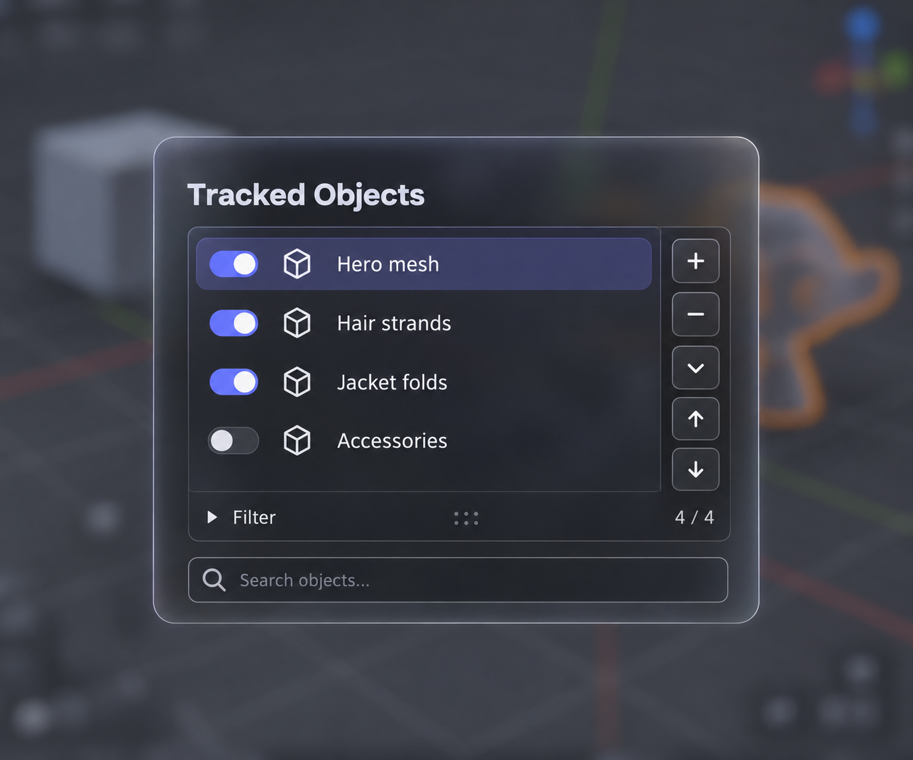
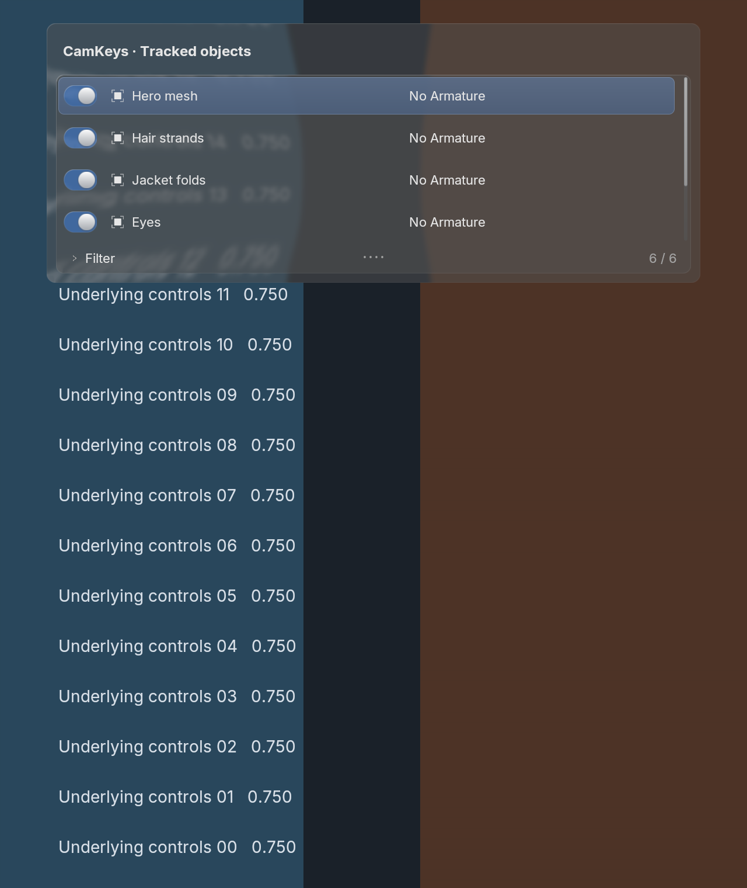
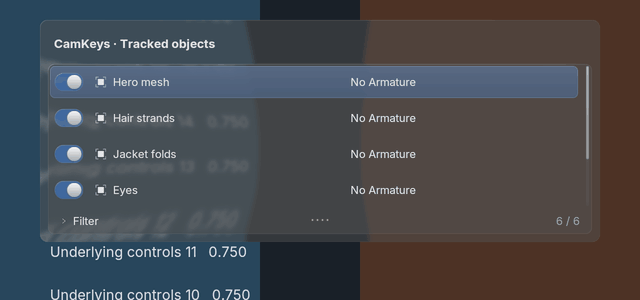
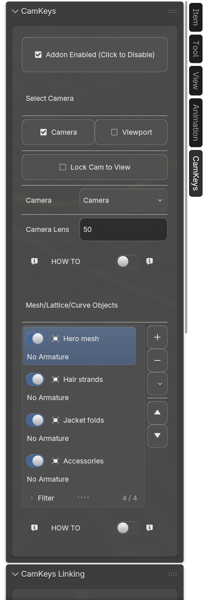
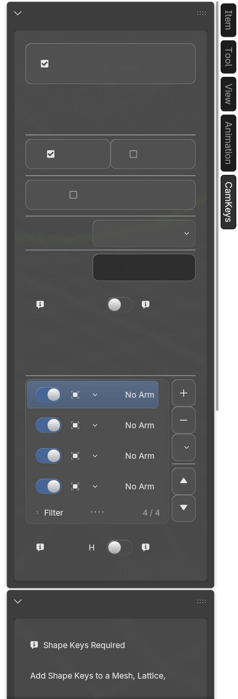
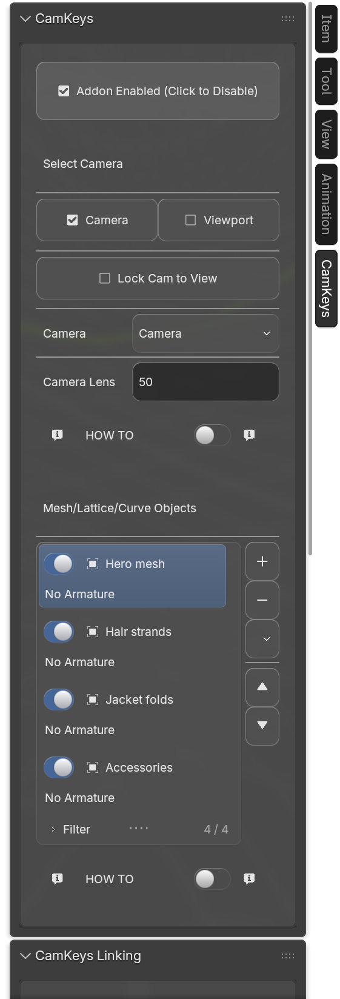
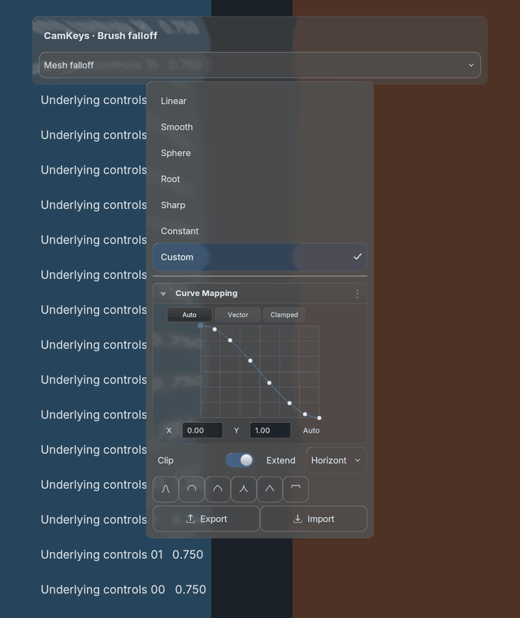

Generated target

Actual Blender 5.2.2 N-panel captures now complement the controlled offscreen demos. Body text and native headers are flushed before GPU clipping/transforms change. Original Blender glyphs use one retained atlas. The list owns most of its row; action rails remain compact.
Reference match remains open. The generated concept omits CamKeys’ “No Armature” status and uses a cube instead of its OBJECT_DATA icon. The implementation preserves those authored semantics. Narrow rows retain secondary status on a second line. This is a functional correction, not a claim of pixel-exact concept acceptance.



Drag the divider. Before capture already includes the icon atlas and compact action rail; it exposes the remaining native text-batching failure before the final repair.





283 unit tests; 5.1.2/5.2.2 consumer action and context checks. No activation events in recorded test launches. Captures retain BVT glass and active theme roles; factory viewport background differs from your live scene. Timing excludes readback and GPU completion. Runtime, focus, pixel-stability and timing evidence · Overview and remaining work